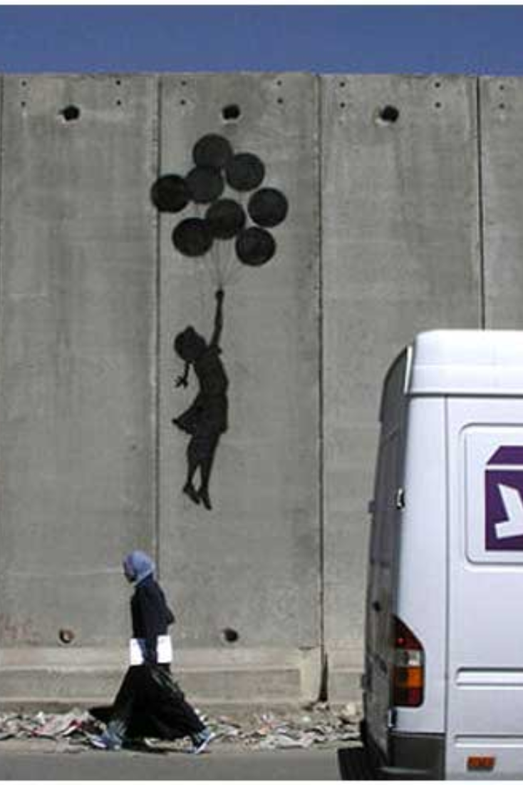

Credit
Flying Balloon Girl is perhaps one of Banksy’s most well known artworks. It was painted on a wall on the West Bank in Israel in 2005 and carries a poignant political message. Many believe that the piece signifies the children trapped by the conflict between Israelis and Palestine’s who are longing to fly away to freedom.
2005-06
Spray Paint
Palestine, IS